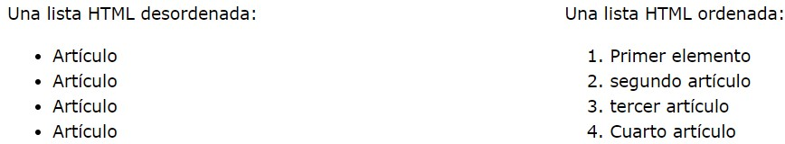

Que Es Una Lista? Otro elemento HTML que te permite estructurar el contenido de la página es el elemento lista. Gracias a él puedes crear filas con información y marcarlas con viñetas o números, incluso, hay navegadores que admiten los números romanos. Aunque no parezca, detrás de las listas que ves en los sitios web, siempre hay una etiqueta HTML indicando que sea una lista desordenada u ordenada. Aquí te explicamos su principal diferencia:
Un elemento de lista desordenada se ve de la siguiente manera: <ul></ul>
Pero, a diferencia de los elementos que has visto hasta ahora, estas etiquetas no hacen nada por sí solas. Para mostrar el contenido como una lista, necesitan dos elementos HTML que trabajen juntos: uno para indicar que vas a incluir una lista <ul>, y otro para hacer que cada elemento de la lista aparezca en una fila diferente<li>, así:
<ul>
<li>Este es el primer ítem de la lista.</li>
<li>Este es el segundo ítem de la lista.</li>
<li>Y este el tercero.</li>
</ul>
Un elemento de lista ordenada se ve de la siguiente manera:
<ol></ol>

La <dl>etiqueta define la lista de descripciones, la <dt>etiqueta define el término (nombre) y la <dd> etiqueta describe cada término: